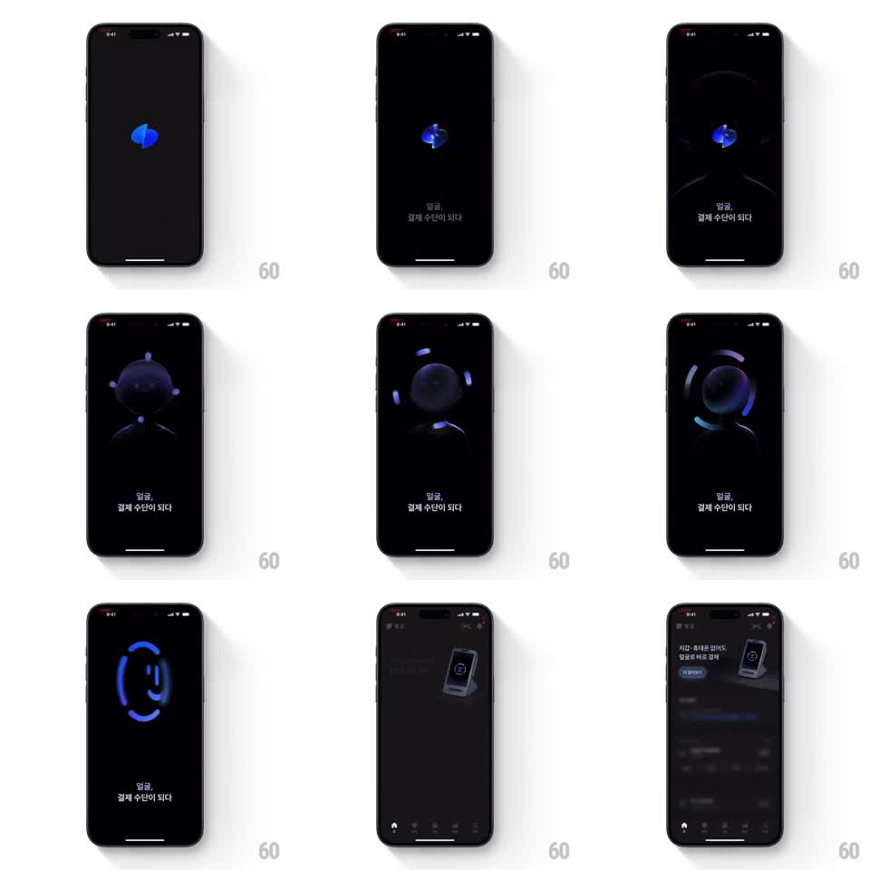

Media
Frame-by-frame

Rebuild this animation 1:1: Toss's face-ID splash - the blue logo morphs into a rotating 3D crystal, then into a scanning face silhouette ringed by a loader, and the Face ID smile glyph forms inside the ring before the home screen reveals.

Rebuild this animation 1:1: Toss's face-ID splash - the blue logo morphs into a rotating 3D crystal, then into a scanning face silhouette ringed by a loader, and the Face ID smile glyph forms inside the ring before the home screen reveals. ## Integration Integration: stack-agnostic spec - springs given as stiffness/damping, timed motions as duration + curve; map every value to your framework and animation library of choice. ## Scene Black screen throughout. Sequence: the blue Toss leaf logo center; a glossy 3D blue crystal rotating in place; Korean tagline at bottom; a dark face silhouette head with the crystal glowing inside; a blue circular scan ring with orbiting dots; the ring containing a Face ID smile glyph; finally the dark home screen (balance card, phone mockup, bottom tabs). ## Motion spec Pattern: sequenced 3D morph splash, ~3.5s total. - Logo-to-crystal: the leaf logo scales down and folds into the rotating 3D crystal (600ms, ease-in-out, continuous slow rotation ~30deg/s). - Crystal-to-face: the crystal drifts down into the face silhouette as the head fades up around it (500ms, ease-out); the tagline fades in below (250ms). - Scan: the blue ring draws around the head (stroke sweep, 600ms) with two orbiting dots (1 rev/s); the head dims as the Face ID smile glyph strokes in inside the ring (400ms). - Reveal: the ring scales up and fades (300ms) while the home screen slides up from 8% below (400ms, ease-out). ## Calibration - One continuous camera - every element shares center stage, nothing jumps position. - The blue glow is the only light source; everything else stays near-black. ## Reduced motion Logo crossfades through the three states (250ms each) to the home screen. ## Don't miss - The orbiting dots during the scan are offset ~120deg, not opposite. - The tagline stays visible across the crystal, face, and scan states.